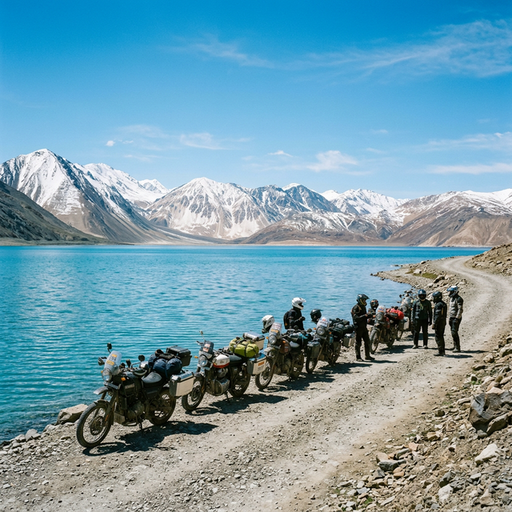
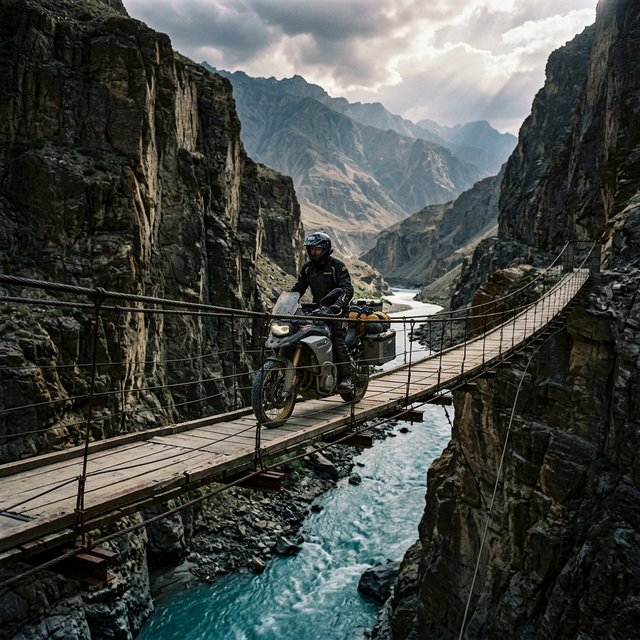

Spiti Valley Circuit
Ancient monasteries, the world's highest villages, and the turquoise jewel of Chandratal Lake. The classic Spiti loop via Shimla.
Highlights: Ki Monastery 4,166m, Komic 4,587m, Tabo UNESCO, Chandratal Lake, Kunzum La
Explore Itinerary →
Quick Spiti Getaway
The perfect weekend warrior route. Manali to Kaza and back — hit every Spiti highlight in just 4-5 days.
Highlights: Rohtang Pass, Ki Monastery, Kibber, Langza, Hikkim, Tabo, Kunzum La
Explore Itinerary →
Leh-Manali Express
The fastest complete Ladakh loop. All major highlights — Khardung La, Pangong, Nubra, Tso Moriri — packed into 7-8 days.
Highlights: Tanglang La, Khardung La, Pangong Lake, Tso Moriri, Chang La
Explore Itinerary →
Ladakh Classic Circuit
The ultimate 10-12 day loop. Pangong's endless blue, Tso Moriri's solitude, Khardung La's glory, Turtuk's charm — all in one epic ride.
Highlights: Khardung La 5,359m, Nubra Valley, Turtuk, Pangong Tso, Tso Moriri
Explore Itinerary →Kashmir–Leh–Manali Grand
The grand Himalayan experience. Dal Lake houseboats, Gulmarg gondola, NH1 highway, Lamayuru moonland, and the full Ladakh circuit.
Highlights: Dal Lake, Gulmarg 4,200m, Zoji La, Lamayuru, Drass, Pahalgam
Explore Itinerary →
Zanskar Valley
Remote, raw, and utterly spectacular. River crossings, gorge roads, and the cliff-cave Phuktal Monastery — India's most isolated valley.
Highlights: Pensi La 4,401m, Padum, Phuktal Cave Monastery, Zanskar Gorge Road
Explore Itinerary →Zanskar + Spiti Combined
The best of both worlds for off-road veterans. Full Ladakh, Zanskar Valley, then cross into Spiti via NH3.'
Highlights: Khardung La, Pangong, Phuktal, Zanskar Gorge, Ki Monastery, Tabo
Explore Itinerary →
Sach Pass–Leh–Manali
One of India's most dangerous passes. Snow walls, sheer drops, narrow ridges, then into full Ladakh. Brave adventurers only.
Highlights: Sach Pass 4,414m, Pangi Valley, Trilokinath, Khardung La, Pangong
Explore Itinerary →Umling La — World's Highest Road
Summit the Guinness World Record motorable road at 5,883m. 50% less oxygen. -15°C in July. The ultimate biking achievement.
Highlights: Umling La 5,883m, Hanle Observatory, Tso Moriri, BRO Certificate
Explore Itinerary →
Mega Grand Circuit
The ultimate. Every major pass, valley, and lake in one epic 25-30 day journey. Sach Pass, Kashmir, Zanskar, Ladakh, Umling La, Spiti.
Highlights: All 13 major passes, every valley, every lake — the once-in-a-lifetime ride
Explore Itinerary →Custom Route
Have a dream route in mind? We'll plan it for you — including logistics, stays, and support.
Plan My Route